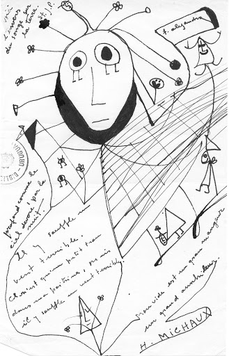

Alejandra Pizarnik
(1936 - 1972)
Presentación
Monográfico dedicado a la poeta argentina Alejandra Pizarnik (1936-1972). Su obra es una de las propuestas más rupturistas y de mayor influencia en la poesía contemporánea, sobre todo en la escrita en lengua española por mujeres. Emparentada con el Conde de Lautréamont y André Breton, la vida y la obra de esta autora puede definirse como una extraña tentación de traspasar los límites, siempre tanteando el milagro, aun a riesgo de asomarse a la locura. Amiga de Cortázar, exploró como él ese otro lado de la realidad en el que se instala lo fantástico.
En esta ocasión se ha pretendido, además de ofrecer un panorama de su vida y una visión crítica de su obra, establecer la relación entre la pintura y la poética de Pizarnik, ilustrando los textos con imágenes cedidas por el artista Antonio Beneyto, muy relacionado con la autora, y con ilustraciones de Helena Martínez inspiradas en algunos de sus escritos. Confiamos en que la trágica leyenda que envuelve a Alejandra Pizarnik no les impida acercarse a este universo poético que, en sus momentos más altos, seduce desde el espanto y produce en el lector un sacudimiento interior.
Ella aún vive
Los extravíos e iluminaciones que la crítica advierte en textos como El deseo de la palabra, Árbol de Diana y El infierno musical atañen asimismo a la personalidad de su autora, Alejandra Pizarnik, cuya fuga de la realidad acabó traduciéndose en prestigio poético. No obstante, a pesar de la sensación de extrañeza que preside su repertorio vital, las vicisitudes afectivas de esta escritora también pueden encandilar al lector por el modo en que, en un segundo movimiento, la empujaron a rebuscar el misterio que impregna lo cotidiano. De ese modo, la poesía aparece como resultado espontáneo de una biografía que no hubiera podido expresarse con otro tipo de imágenes. Puestos a introducir las claves de semejante búsqueda, podemos recordar las líneas que ella misma escribió a León Ostrov desde París, a fines de 1960: «En fin —le dice—, tengo mucho miedo y sin embargo estoy maravillada, fascinada por lo extraño y lo inextricable de todo lo que soy, de todas las que soy y las que me hacen y deshacen» (Correspondencia Pizarnik, Buenos Aires, Seix Barral, Editorial Planeta Argentina, 1998, p. 50).
A veces también se me acaban las sonrisas para ti, a veces también se me acaban las ganas de escribirte. Pero te quiero, ojalá lo entiendas, siempre te quiero, pero a veces mis abrazos no tienen calor y mi boca no sabe que decir… Pero te quiero, siempre te quiero, cuando no te convengo, cuando no me soportas, cuando te odio, te quiero
- Alejandra Pizarnik

Dibujo de Alejandra Pizarnik
Desde este costado literario, entreviendo enigmas semejantes, Pizarnik reproduce un ademán que la emparenta con Isidore Ducasse, quien editó en 1869 la versión completa de sus Cantos de Maldoror bajo el seudónimo de Conde de Lautréamont. Ciertamente, unas palabras de este último pueden servirnos de invitación para penetrar en el universo de su heredera. «Me propongo —escribe—, sin estar emocionado, declamar con poderosa voz la estrofa seria y fría que vais a oír. Prestad atención a su contenido y evitad la penosa impresión que ella intentará dejar como una mancha en vuestras turbadas imaginaciones» (Obra completa. Edición bilingüe, traducción de Manuel Álvarez Ortega, Madrid, Ediciones Akal, 1988, p. 69).Las auténticas revelaciones vendrán después, pero antes de cruzar el pórtico vale la pena convocar a otro personaje afín a Lautréamont y a nuestra poetisa: André Breton.
Porque ¿cómo evitar esta referencia a Breton? Aunque rebelde a las clasificaciones, la escritora confió en la metodología surrealista del maestro, quizá recordando que, en palabras de este último, la vida humana «no sería tan decepcionante para algunos si no nos sintiéramos constantemente en la obligación de realizar actos por encima de nuestras fuerzas. Parece incluso que el milagro esté a nuestro alcance» («Los cantos de Maldoror», Los pasos perdidos, traducción de Miguel Veyrat, Madrid, Alianza Editorial, 1998, p. 59). En vela constante, arrebatada por un soplo de frenesí, y por otras razones que no escaparán al lector que visite esta muestra, Pizarnik quiso tantear un milagro como ese que comenta Breton. Un milagro que, sin lugar a dudas, sobrepasaba sus posibilidades emocionales. Cuando menos, así lo entiende Enrique Molina, otro observador que piensa en Alejandra, y la ve pasar, «solitaria, en una de esas enormes burbujas del Bosco donde yacen parejas desnudas, dentro de un mundo tan tenue que sólo por milagro no estalla a cada segundo. Pero la suya es una burbuja nocturna, irisada como una perla negra» («La hija del insomnio», Cuadernos Hispanoamericanos, sup. Los complementarios, n.º 5, mayo de 1990, p. 5)
Alejandra Pizarnik: SU VOZ
Escrito con un nictógrafo (Fragmentos)
En el año 1972, Escrito con un nictógrafo de Arturo Carrera se presenta en el Centro de Arte y Comunicación de Buenos Aires. Allí está Alejandra Pizarnik, que recita los primeros fragmentos del texto. Además del placer de escuchar su voz, prácticamente desconocida por los lectores contemporáneos, creo que la lectura de Pizarnik se abre como texto paralelo, porque la modulación es un dato fundamental de esta largo poema que habla de la muerte y de la escritura. Esta grabación es además un documento histórico, porque es la única que queda de la voz de la poeta.
Escrito con un nictógrafo de Arturo Carrera en la voz de Alejandra Pizarnik.
Buscar. No es un verbo sino un vértigo. No indica acción. No quiere decir ir al encuentro de alguien sino yacer porque alguien no viene”.
- Alejandra Pizarnik
El escriba ha desaparecido
Señaló el sitio vacío
donde los muertos se divierten
La noche penetrando
y el glande inflado de tinta, penetrando
hacen el mismo ruido
que la muerte penetrando
SILENCIO DESORBITADO
la orfandad lleva un blanco en la frente
E L P O E M A S E A B R E
esa es tu fuerza
Yo en la prosa de tu libro
En el barco de los muertos
Entre volúmenes huecos mi cuerpo grafía
a otro páramo
descargando letras huesos huecos
El poema se abre
Esa es tu fuerza
Me hablabas de una trampa del lenguaje
el poema se abre
estos muertos son míos
(señalando las palabras)
estos muertos son míos.